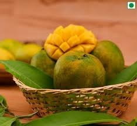
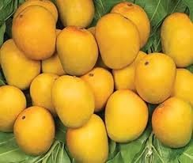

MANGOPORTER
Experience the unparalleled sweetness of sun-ripened, hand-picked authentic mangoes.
From the heart of Indian Orchards to your doorstep.


Witness the journey from the soil of India to the global markets.
Taste the trust shared by mango lovers across the world.
"Exquisite taste! The Alphonso mangoes from MangoPorter remind me of the authentic flavors from my childhood. Their timely delivery in Bangalore is commendable."
"Best quality Banganapalle I've ever ordered. Perfect ripeness and incredibly fresh. MangoPorter is now my go-to for premium seasonal mangoes."
"Outstanding service and impeccable quality. The Kesar mangoes arrived full of fragrance and flavor. The scientific growing practices really show in the quality."
Ready to bring the finest mangoes to your availability